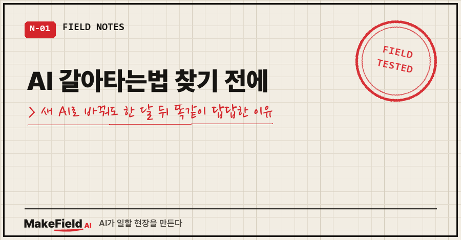
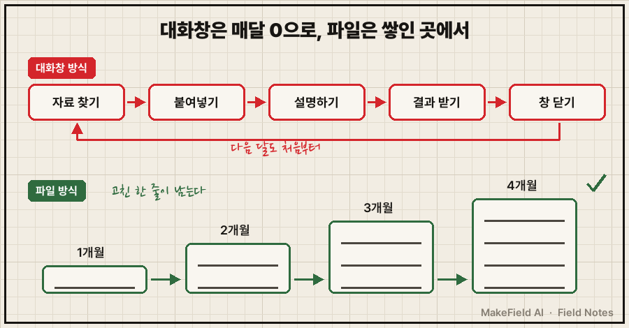
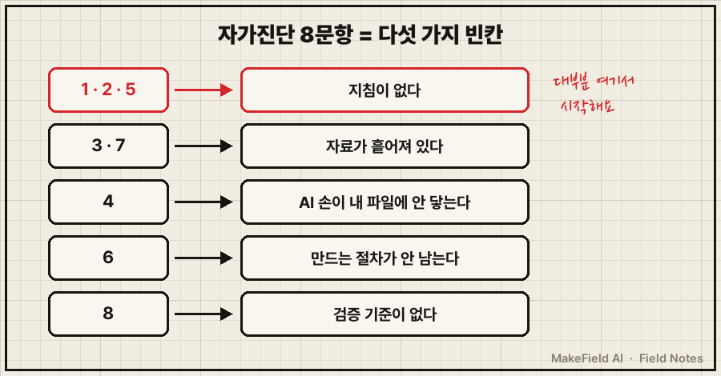
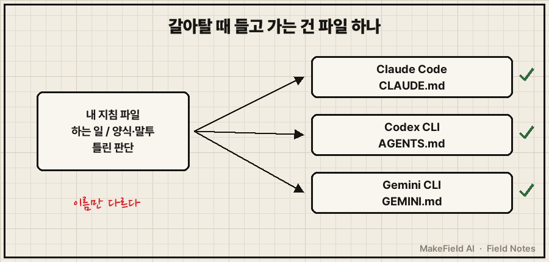
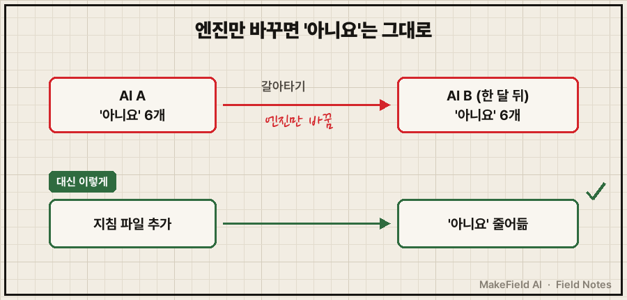

AI 갈아타는법을 찾고 계신다면, 바꾸기 전에 5분만 내 주세요.
결론부터요. 새 AI로 갈아타도 한 달쯤 지나면 똑같이 답답해지는 건 모델 탓이 아니라, 창을 닫으면 내 설명이 전부 사라져 매번 0에서 시작하는 구조 탓이에요. 갈아타기 전에 자가진단 8문항으로 '무엇이 없는지'부터 확인하고, 설명을 대화창 대신 파일에 적어 두면 어느 AI로 가든 그 파일을 그대로 들고 갈 수 있습니다.
제조 현장 엔지니어로 15년, AI와는 3년 넘게 매일 일했어요. 그런데 돌아보니 손에 남은 게 없더라고요.
지난번 책 소개 글에서 『직장인의 AI 오답 노트』를 한 장씩 풀겠다고 했죠. 오늘이 그 첫 장(0-1)입니다.
1. 갈아타도 답답한 이유: 매번 0에서 시작하니까요
제 3년은 이랬어요.
자료 찾고,
붙여 넣고,
설명하고,
결과 받고,
창 닫고.
다음 달에 또 찾고, 또 붙여 넣고, 또 설명하고..
이번 달 자료 찾기 → 붙여넣기 → 설명하기 → 결과 받기 → 창 닫기
다음 달 자료 찾기 → 붙여넣기 → 설명하기 → 결과 받기 → 창 닫기
↑ 매번 0에서 시작3일을 쓰든 3년을 쓰든 이 구조에선 반복 횟수만 쌓여요.
새 모델이 나올 때마다 저도 갈아탔어요. 처음 며칠은 나아 보여도, 새 창은 내 양식도 말투 취향도 지난달 정정도 몰라요. 유능한 신입을 매일 아침 새로 뽑는 셈이죠.

그림을 글로 옮기면 이래요. 위쪽 대화창 방식은 매달 같은 다섯 단계를 처음부터 돌고, 아래쪽 파일 방식은 고친 내용이 파일에 남아 다음 달 출발점이 조금씩 앞으로 갑니다.
2. 제가 겪은 일: 정정을 여섯 번 했는데 첫 문장은 그대로였어요
이 구조가 제일 아프게 드러난 날이 있어요.
개인적으로 오래 굴려 온 계획을 AI와 길게 상의했는데, AI가 초반에 저를 한 문장으로 정리하더라고요. 대충 "만드는 건 잘하는데 파는 건 피하는 사람"이라고요. 그리고 거기 맞춘 처방을 줄줄이 내놨어요.
사실이 아니었어요. 저는 직접 영업을 뛰어 본 사람이거든요. 그래서 처방을 여섯 번 반려했습니다.
처방은 여섯 번 바뀌었는데, 저를 규정한 첫 문장은 한 번도 안 바뀌었어요. 정정할 때마다 "알겠습니다"라고 하고, 다음 답에선 그 정정이 사라져 있었죠. 저는 답을 채점하고 있었는데, 틀린 건 답이 아니라 문제지였던 거예요.
그 뒤로 방식을 바꿨어요. 지금은 '반박 장부'라는 파일이 하나 있어요. AI가 저를 잘못 판단했다가 제가 반박해서 이긴 건을 한 줄씩 적고, 비슷한 상담을 하기 전엔 AI가 그 파일부터 읽게 해 뒀어요. 10월 7일에 만들었는데 10월 13일까지 일주일 만에 36줄이 쌓였습니다. 대화창이었으면 36번 다 날아갔을 정정이에요.
3. 갈아타기 전에 해 볼 자가진단 8문항 (5분)
책 0-1장에서 만드는 게 이 진단표예요. 예/아니요로만 답해 보세요.
- 지난주에 AI에게 쓴 요청문을 지금 그대로 다시 찾을 수 있다
- 새 대화를 열 때 내 일·말투·양식을 다시 설명하지 않는다
- AI에게 줄 자료를 5분 안에 모을 수 있다
- 파일을 하나씩 올리거나 붙여 넣지 않아도 AI가 내 자료를 읽는다
- AI가 틀려서 고친 내용이 다음 대화에도 남아 있다
- 지난달 만든 문서를 이번 달엔 절반 이하 시간으로 다시 만든다
- "작년 그 자료"를 1분 안에 찾는다
- AI가 낸 숫자를 무엇과 대조할지 정해져 있다
| '아니요' 개수 | 지금 상태 | 할 일 |
|---|---|---|
| 6개 이상 | 지극히 정상 (저도 3년 여기 있었어요) | 아래 4절 지침 파일부터 |
| 3~5개 | 막힌 곳이 보이는 상태 | '아니요' 번호만 골라서 해결 |
| 2개 이하 | 일터가 꽤 갖춰진 상태 | AI 답 검증 기준부터 점검 |

'아니요'가 나온 번호를 묶어 보면 빈칸이 다섯 종류예요. 1·2·5번은 지침이 없는 것, 3·7번은 자료가 흩어진 것, 4번은 AI 손이 내 파일에 안 닿는 것, 6번은 만드는 절차가 안 남는 것, 8번은 검증 기준이 없는 것. 진단표는 버리지 말고 몇 주 뒤에 다시 해 보세요. '예'가 늘었다면 쌓이고 있다는 증거예요.
4. 따라하기: 설명을 대화창 말고 파일에 적어 두기
제일 흔한 빈칸(1·2·5번)부터 메워 볼게요. Claude Code 기준으로 설명합니다. 설치는 연재 2편에 있어요.
1단계. 작업 폴더를 하나 만들고 그 안에 CLAUDE.md 파일을 만듭니다.
내작업/
├─ CLAUDE.md ← 지침 파일 (AI가 시작할 때 자동으로 읽음)
└─ 자료/ ← 자주 쓰는 파일2단계. 지침 파일에 세 칸만 적습니다. 아래는 개인 가계부 정리를 예로 든 것이에요.
[내 작업 지침]
■ 내가 하는 일
- 매달 말 가계부를 정리해 지출 요약 1장을 만든다
■ 양식·말투
- 요약은 첫 장에. 표 먼저, 설명은 3줄 이내
■ 틀린 판단 (다시 꺼내지 말 것)
- "요약은 자세할수록 좋다" → 틀림. 첫 장만 읽힌다세 번째 칸이 핵심이에요. 틀린 걸 지우지 않고 "이건 틀렸다, 이유는 이것"으로 남겨 둡니다. 제 반박 장부가 바로 이 칸을 키운 거예요.
3단계. 그 폴더에서 Claude Code를 켭니다.
cd 내작업
claude4단계. 확인 질문을 하나 던집니다.
CLAUDE.md 기준으로, 내가 싫어하는 요약 방식이 뭔지 한 줄로 말해줘설명한 적 없는 새 대화인데 '틀린 판단' 칸 내용을 짚어 내면 성공이에요. 엉뚱하면 파일 이름이 CLAUDE.md인지, 그 폴더에서 켰는지부터 보세요.
GPT 쪽 Codex CLI는 AGENTS.md, Gemini CLI는 GEMINI.md를 같은 방식으로 읽어요(각 도구 공식 문서의 지침 파일 항목, 2026년 10월 기준). 파일 이름만 다르고 구조는 같습니다. 그래서 갈아탈 때 들고 가는 건 대화 기록이 아니라 이 파일이에요. 복사해서 이름만 바꾸면 새 AI도 첫날부터 내 양식을 압니다.

5. 여기서 이렇게 틀립니다: 도구를 바꾸면 해결될 거라 믿어요
증상: 새 AI로 갈아탔는데 한 달쯤 지나면 똑같이 답답해져요.
원인: 문제는 모델이 아니라 매번 0에서 시작하는 구조예요. 구조는 그대로 두고 엔진만 바꾼 거죠.
이렇게 합니다: 갈아타기 전에 자가진단 8문항부터 다시 해 보세요. 도구를 바꿔도 '아니요' 개수는 그대로일 거예요. 줄일 수 있는 건 파일이에요.

갈아타지 말라는 게 아니에요. 더 나은 모델이면 바꾸는 게 맞죠. 다만 빈손으로 옮기면 한 달 뒤 같은 자리예요.
자주 묻는 질문
Q. 지침 파일은 처음에 얼마나 길게 써야 하나요?
다섯 줄이면 충분해요. 세 칸만 채우고, 같은 지적을 또 하게 되는 순간 한 줄씩 더하세요.
Q. ChatGPT 웹만 쓰는데도 의미가 있나요?
있어요. 메모장에 같은 세 칸을 적어 두고, 새 대화를 열 때 그 메모부터 붙여 넣으면 돼요. CLI 도구는 그 붙여넣기를 자동으로 해 준다는 차이뿐이에요.
8문항 해 보시면 '아니요'가 몇 개 나오는지, 어느 번호에서 제일 많이 걸리는지 궁금하네요. 다음 편에선 설치 없이, 지금 쓰는 대화창 그대로 결과물을 바꾸는 방법부터 해 볼게요.
이 글은 『직장인의 AI 오답 노트』 0-1장을 블로그용으로 다시 쓴 것입니다. 같은 증상의 원인과 점검표 전체는 책에 있어요. https://bookk.co.kr/bookStore/6ac4db0965e94aef5d1b317d